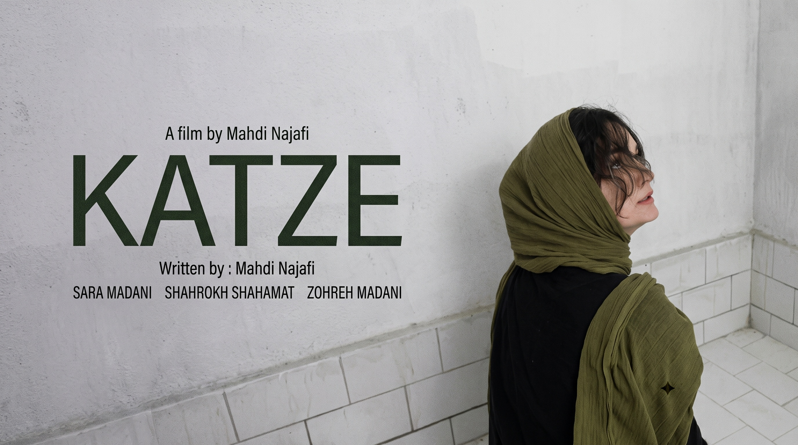

Translating formalist cinema and off-screen dread into gaze-contingent media architectures.
Bridging years of experimental directing—exploring hors-champ, acousmatic sound, and static negative space—with computer vision to engineer adaptive editing systems driven by spectator attention.
Gaze-Contingent Cinematic Profiler & Adaptive Editing Engine
Aesthetic Hypothesis & Interactive Logic
Drawing upon formalist film theory, the engine operationalizes the off-screen void (hors-champ). When an acousmatic sound emerges beyond the frame boundary, the system measures whether viewer fixation lingers on the primary subject or shifts toward the empty negative space. If unattended, the finite state machine executes an adaptive cut revealing the peripheral dread agent, accompanied by real-time audio cross-fading.
System Architecture Pipeline
Empirical Telemetry & Profiling
The Research Arc: Research-Creation Trajectory
Directorial Form & Negative Space
Formulating aesthetic hypotheses on spatial tension, prolonged static wide-angle framing, and acousmatic dread through short-film directing. These artistic works served as the foundational inquiry into how cinema directs psychological dread without explicit visual exposure.
Empirical Sensing & Adaptive Media
Translating authored directorial intuition into quantitative parameters: deploying gaze telemetry and semantic segmentation to measure spectator visual dwell time, replacing static timelines with reactive computational montage systems.
Directorial Works as Research Testbeds
Experimental short films directed to investigate spatial absence, off-screen dread, and spectator fixation dynamics prior to computational automation.
KATZE
Written & Directed by Mahdi NajafiExplores severe negative space, institutional sterile framing, and off-screen dread (hors-champ). Investigates spectator discomfort when psychological cues reside beyond the visible frame, serving as primary baseline stimuli for gaze-dispersion telemetry.

Testbed 02: Acousmatic Voice & Attention Gating
Audio-Visual Dissociation • AcousmêtreInquires into acousmatic sound design where auditory sources remain deliberately hidden from the frame. The staging examines how sudden off-screen acoustic triggers induce rapid gaze shifts toward frame peripheries, informing the state-machine transition threshold in the montage engine.

Testbed 03: Temporal Stasis & Fixation Restlessness
Pacing • Visual Saccade DynamicsDeploys prolonged shot durations to provoke viewer visual restlessness. By resisting standard rhythmic editing cuts, this work studies the point at which viewer gaze wanders away from the primary subject—a quantitative dynamic modeled in the profiler's dwell-time analytics.
Open to PhD research positions and collaborative inquiries in Computational Media, HCI, and Adaptive Cinematic Systems.